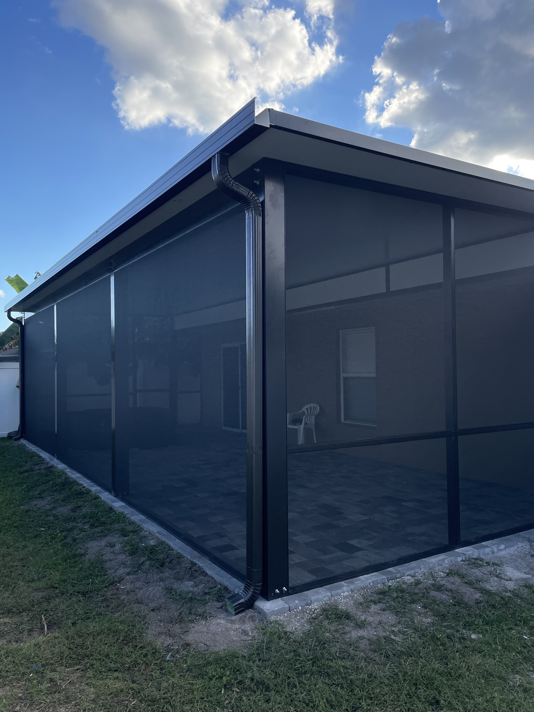
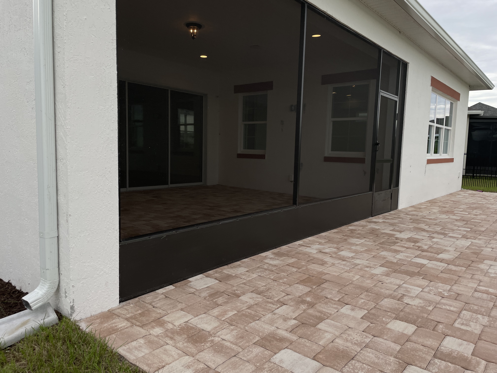
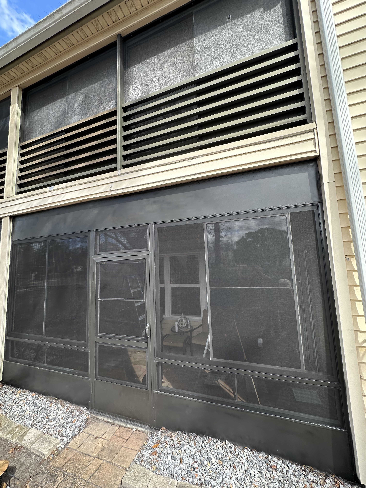

Custom Design
Built to match your home’s architecture and outdoor space.
Custom · Elegant · Durable
Enjoy your outdoor space without bugs or debris. We design and build clean, modern patio and lanai enclosures across Central Florida.
We build and repair patio and lanai enclosures for homeowners and property managers. Our designs create comfortable, protected outdoor spaces with clean architectural finishes.






BEFORE AFTERSimple Screen Service provides professional screen enclosure repair across Central Florida including Orlando, Kissimmee, Clermont, Winter Garden, and surrounding areas. Whether you need pool cage repair, patio screen replacement, or full re-screening, our team delivers fast, clean, and reliable service built for Florida weather.
If you're searching for screen enclosure repair near me, our experienced technicians are ready to restore your enclosure quickly and professionally.
Built to match your home’s architecture and outdoor space.
High-quality aluminum and screen built for Florida weather.
Enjoy outdoor living without insects or debris.
Clean, precise, and reliable workmanship.
Looking for repairs? Visit our screen repair services for fast replacement and re-screening.
Our team provides professional screen enclosure services across: